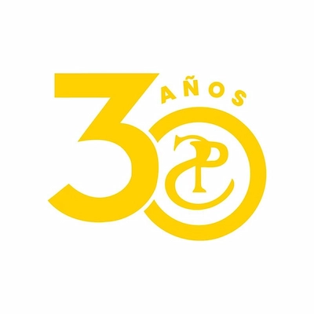
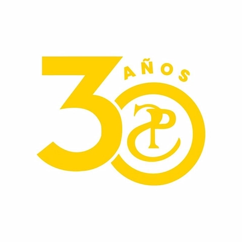

Events
National Expoactive March 19 to March 23
Expoactiva Nacional is an initiative of the Soriano Rural Association, an association of rural
producers in the department, with more than 120 years of teamwork.
Currently it is consolidated as the largest agribusiness exhibition in the country. During the five
days that the event lasts, more than 350 exhibitors participate and more than 750 brands are
presented, generating a positive impact in the region in areas of knowledge and technology.
5K and 10K Marathon March 24
On March 24, the Corre Mercedes 5K and 10K sporting event will take place, being the 2nd. date of
“Las 8 de Soriano” and the 7th. date of the Uruguayan Athletic Confederation.
The race will start at 11:00 from the Rose Garden in the city of Mercedes, and registrations can be
made until March 11, with a kit and t-shirt value of $650.
International sculptors meeting Apr 26 to Apr 28
From April 26 to 28, 2024, the 17th edition of the Sculptors Meeting will be held in Palmar
(ARCArte).
As usual, there will be an exhibition hall where the works provided by the participating sculptors
will be presented, and with thematic talks and workshops.
Weather
Next Days
Windchill
Companies
 
